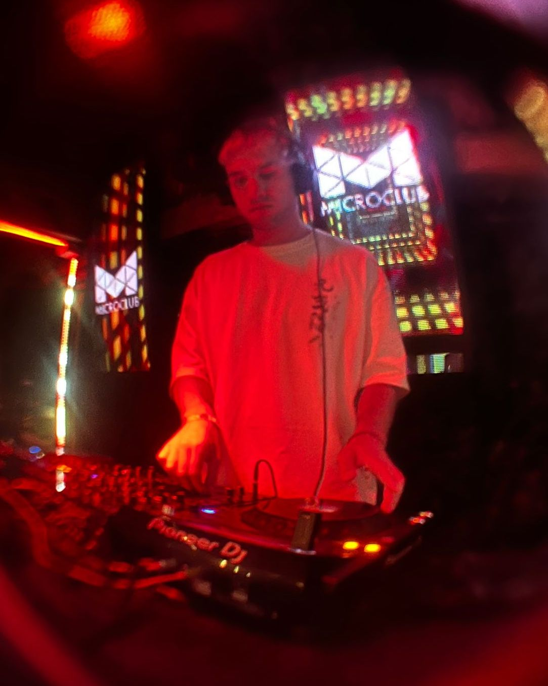

Acerca De
Escesounds (Sebastian Celis “esce”), es un Productor Musical Chileno basado en Viña del Mar.
Nacido en Concepción, Sebastian creció rodeado de instrumentos musicales gracias a su familia, a los 11 años su curiosidad lo llevo a descargar por primera vez FL Studio para crear sus primeras composiciones en el mundo de la musica electronica, desde entonces su pasión por la Musica solo siguió creciendo y de manera autodidacta fue construyendo el conocimiento y herramientas para perfeccionar sus habilidades y trabajos.
El 2017 abandono sus estudios de Negocio para dedicarse completamente al mundo de la producción, ese mismo año viajo a Londres a estudiar en la Garnish Music Production School durante 2 meses junto al Grammy Winner Producer Aamir Yaqub. Desde entonces Escesounds ha estado desarrollando su carrera, inicialmente dedicado a las Ghost Productions para DJs de musica electronica, más adelante comenzó a trabajar con varios artistas y cantantes de diversos generos, haciéndose un nombre en la quinta region y logrando trabajar con grandes artistas nacionales como Harry Nach, Ceaese, Polima West Coast, Aqua VS, entre otros.
Sebastian también ha trabajado internacionalmente como asistente para el productor musical Luis “The Dro1dz” Salazar en Miami FL, donde compartió y trabajo con grandes productores y compositores de la industria musical Latina, esta experiencia logro que Escesounds llevara sus habilidades al siguiente nivel y que sus trabajos llegaran a grandes Sellos.